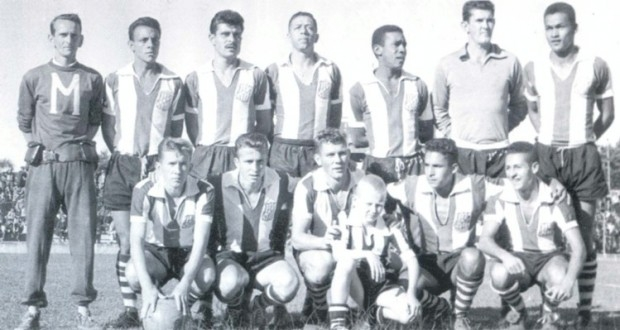

O clube
Operário Ferroviário Esporte Clube é uma agremiação esportiva da cidade de Ponta Grossa, no estado do Paraná, fundada a 1 de maio de 1912, sendo o segundo clube mais antigo do estado em atividade.
O Operário Ferroviário Esporte Clube é o clube de uma apaixonada torcida que representa a cidade de Ponta Grossa e a região dos Campos Gerais do Estado do Paraná em todo o Brasil.
Ponta Grossa, uma das maiores cidades do Paraná com mais de 300.000 habitantes, é considerada o berço do futebol paranaense, pois foi aqui na Princesa dos Campos que em 1909 disputou-se o primeiro jogo de futebol oficial da história do Paraná, entre ponta-grossenses e curitibanos, com vitória de 1 a 0 para o time da casa.

O nome
O nome escolhido por consenso entre os fundadores foi Foot-ball Club Operário Ponta-grossense, com sua primeira diretoria sendo eleita em abril de 1913.
Esse nome duraria somente até 1914, mudando-se para Operário Foot-ball Club.
A partir da metade da década de 1920 nova alteração no nome, agora para Operário Sport Club, mudança essa motivada provavelmente para atrair um número maior de novos sócios, capitalizando recursos para se transformar também em um clube social.
Somente em 1933, após a incorporação do clube social dos ferroviários, que nunca tinha entrado em atividade oficial esportivamente, chegou-se ao nome definitivo: Operário Ferroviário Esporte Clube.